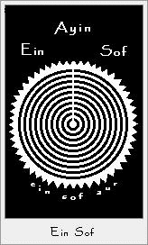
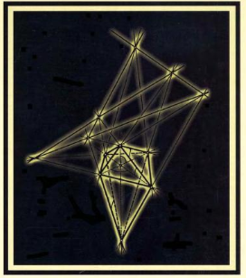
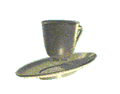
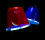
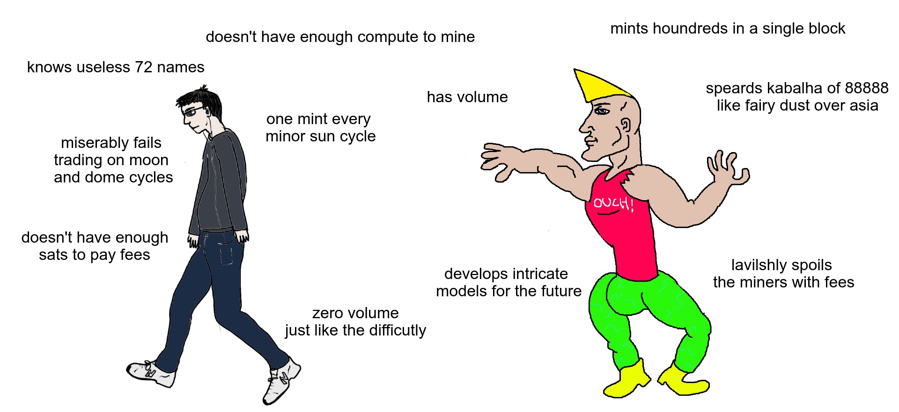

the eternal miner's honeypot or how i stopped worring
about climate change and embraced the paradox.
Lo and behold, dear reader, for we are about to twist
nature's inclination for efficiency and declare to her:
We will find the next mint, no matter how difficult.
We will use you, with no cause, but of capital.
For we recognize that as much as we wanted to follow delicate efficiency,
and order the monetary through collective civil consensus, we fell flat on our bottoms.
Nature's chaotic mingling did not give us rest, and left us with no other way.
look at us, we spend energy in order to use it.
let us burn our livelyhood, and this burning be a political consensus upon us.
Ho Tesla, brother, look at us. you dreamed of transmission, so fine it
won't cost. But we did not heed. We had to load trucks with the fuel,
load the wires with the two phase.
And in each transmission, we sacrificed a good portion.
We didn't take your suggested path, dear Tesla. We took ours - by the advice of the paradox.
we collectivly decided to burn it all. and we call it transmission.
So know, rockefeller or the like.
Instead of loading trucks to deliver fuel to heat homes.
You can just burn it in place and poof...
btc is in the market on the other side of the planet.
But not all is lost, at least we have a
pollitical consensus on a monetary system.
Its been more than a decade already.
And what did we learn?
The equivalance of computing power to capital.
From whales to gold fish, everyone wants to convert their availble
compute cycles to capital. We saw the forks. We saw the gpus and ascis.
And another cycle is here.
The no ending minable tokens.
The paradox at its purest form.
Not serving the needs of the political consensus.
But building upon it. Forever serving the ones with computing power to turn capital.
A constant sell preassure, but for what purpose?
To raise the difficulty for any mined future token.
We didn't secure no network. We are on top of it.
By raising the difficulty the scarcity of the token increased,
and thus was it eaten up by speculators.
ps. Keep your eyse open folks. Be vigiliant.
For pow over pow is gonna cycle you through like satoshi originally did.
foucet is closing soon
only today, for a single post
1,000 einsof for
>TEH FAUCET<
limited offer
limited supply
first get, first serve basis



local exchange goods community
|
user
|
offers
|
looking for
|
|
einsof_miner
|
10,000 einsof
99,990 infinity
|
a gpu miner
|
wen GPU?

EMERGENCY HAPPENING
Message to all miners.
abandon ship!!!
we have launched a new token.
it's called infinito.
-
better parametrs
-
-
less fees
-
web3.0scale
-
pool mining only, unless u NSA
-
-
first mint gets a gold coin
-
check market prices, volume bout to explode
-
gains gurenteed
-
x10 no, x100 no, xinfinito yes
-
diff start level == bitcoin current diff
"best token" -
newguy fawkes, Head of Operations at POW mining pool inc.
"never seen anything like it" -
vitalik buterin, originator of the DAO - let's change the past.
"God is the Lord." -
satochi nakamoto, a distinguished miner and early settler.
"grab a coffe" qoute from atomicals-js miner
a mighty and celebrated hacker.

message of notice to the united society of mining:
operations are on schedule.
mining in progress....
fan letters  email correspondence
email correspondence
Why should I be mining pow over pow?
Einsof is a perpetual pow token on atomicals that was born out of necessity.
I was mining infinity. I had some mining power, but lack of capital.
I have come to the conclusion that the parameters infinity is set upon are
in their nature limiting the minting by tx fees first and mining power second.
The tx fees were a hurdle for me. And after looking at it more closely, I came to
believe that it will doom infinity as a whole.
After first cycle of minting, where mining power outs the tx fees.
I saw GPU miners coming. And due to them, the cycle of minting will repeat itself again from the start - infinity will again be limited mostly by fees and not mining power.
By changing the parameters, I have setup einsof to somehow mitigate the problem.
Mining is always hard, and mostly doesn't depend on a lot of txs to the blockchain, ie fees.
I can't say I fully understand the gameplay of the parameters available for launching a
perpetual token. It seems to be an open problem, we has a community will slowly have to figure out.
Why u should be mining it? well honestly ser, wen u think real hard about it,
until u almost burst your thinking apparatus from the top, u might notice a new cycle starting...
this overlay of pow over pow, might be the "new bitcoin" - different attire but same persona.
it might be infinity, it might be einsof, it might be a pow on runes or ordinals.
You see....
Bitcoin as a service provides energy companies an ability to transport energy cheaply.
In a paradoxical way, instead of transporting gas to some location which costs money,
energy companies, choose instead to burn it in place for mining btc.
They get to sell energy without moving it anywhere. That's the magic of btc for em.
Notice I am leaving out of the discussion the monetary system that btc introduces,
and am focusing only on the side of the energy companies.
Now, you saw lately the explosion of ordi and atoms.
They all forget where they came from and whats it all about.
It's about transporting physical energy instantly into the market.
A pow on top of pow will finish the work they started : simple tokens on pow - evolve into
pow tokens on pow.
Please forgive me for being a bit disordered.
I do not yet fully understand, what we are up against with this new proof of work on top of btc's
proof of work. But it seems to me an unavoidable future we are heading towards.
Wish u honesty, humility and wellness, sir.

Thanks for reading Boss, by the bye,
Sermon for the dead
.
.8